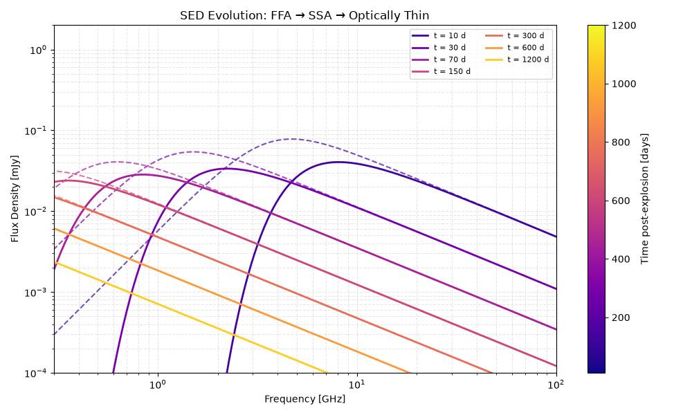
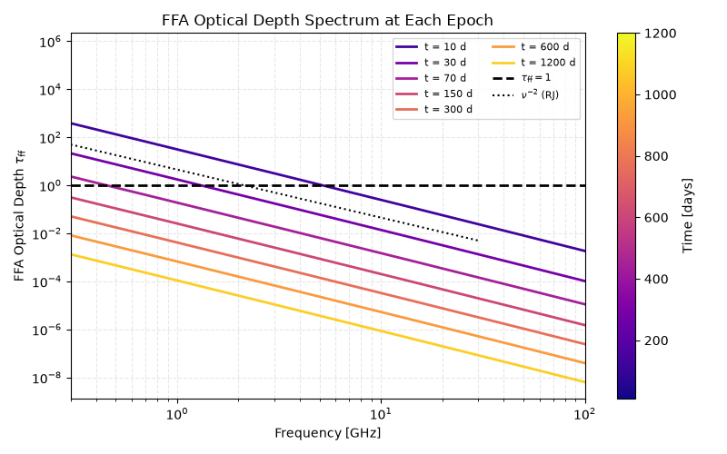

Note
Go to the end to download the full example code.
Time-Resolved Spectral Modeling: FFA Fade-out in a Radio SN#
In radio-bright supernovae with dense circumstellar media, the spectral evolution reveals a transition between distinct absorption regimes:
FFA-dominated phase (early): The unshocked ionized wind absorbs all low-frequency radiation. The observable spectrum below a turnover frequency \(\nu_{\rm turn}\) follows \(F_\nu \propto \nu^2\) (optically thick FFA), steeper than the SSA slope.
SSA-dominated phase (intermediate): As the blast wave sweeps up the dense wind, FFA opacity drops below 1. The self-absorption in the synchrotron source itself now dominates the low-frequency cutoff. The SSA slope is \(F_\nu \propto \nu^{5/2}\).
Optically thin phase (late): Both FFA and SSA are negligible below the peak. The spectrum follows the optically thin power law \(F_\nu \propto \nu^{-(p-1)/2}\).
Observing this transition is a powerful diagnostic for CSM geometry and the ionization state of the wind.
Physical Setup#
We extend the Type IIn SN model from the previous example by computing a time series of full SEDs and overlaying them to visualize the spectral evolution from the FFA-dominated to the optically thin regime.
Hint
This spectral evolution mirrors a well-known observational sequence in radio supernovae: SN 1987A, SN 2006jd, and many Type IIn events follow this pattern. The transition timescale is set by the mass-loss rate and shock velocity.
Relevant API#
compute_ff_RJ_optical_depth_from_quadrature()PowerLaw_Cooling_SSA_SynchrotronSED
Setup#
import matplotlib.pyplot as plt
import numpy as np
from astropy import constants as const
from astropy import units as u
from trilobite.dynamics.shocks import ChevalierSelfSimilarWindShockEngine
from trilobite.radiation.free_free.absorption import compute_ff_RJ_optical_depth_from_quadrature
from trilobite.radiation.synchrotron import PowerLaw_Cooling_SSA_SynchrotronSED
from trilobite.radiation.synchrotron.cooling import SynchrotronRadiativeCoolingEngine
from trilobite.utils.plot_utils import set_plot_style
# set_plot_style()
# plt.rcParams['text.usetex'] = True
Physical Parameters#
We use a moderately dense CSM (between the Type Ibc and Type IIn extremes) to ensure the FFA→SSA→optically-thin transition falls within a few hundred days — observable in a typical radio monitoring campaign.
# Shock parameters
E_ej = 1.0e51 * u.erg
M_ej = 3.0 * u.Msun
n = 10
M_dot = 3.0e-5 * u.Msun / u.yr # Moderate mass-loss rate
v_wind = 300.0 * u.km / u.s
# Microphysics
epsilon_e = 0.1
epsilon_B = 0.01
p = 3.0
gamma_min = 1.0
gamma_max = 1e8
mu = 0.61
f_V = 0.5
f_A = 1.0
# Observing
D_L = 30.0 * u.Mpc
T_wind = 1.0e4 * u.K # Ionized wind temperature
# SED frequencies (dense coverage for smooth spectrum)
freqs_sed = np.geomspace(1e-2, 100.0, 500) * u.GHz
# Epoch sequence covering all three spectral regimes
epochs = u.Quantity([10.0, 30.0, 70.0, 150.0, 300.0, 600.0, 1200], u.day)
print("=== FFA Fade-out Model ===")
print(f" M_dot = {M_dot:.2e}")
print(f" v_w = {v_wind:.0f}")
print(f" D_L = {D_L:.0f}")
=== FFA Fade-out Model ===
M_dot = 3.00e-05 solMass / yr
v_w = 300 km / s
D_L = 30 Mpc
Shock Engine and FFA Infrastructure#
shock_engine = ChevalierSelfSimilarWindShockEngine()
cooling_engine = SynchrotronRadiativeCoolingEngine()
sed = PowerLaw_Cooling_SSA_SynchrotronSED()
shock_params = {
"E_ej": E_ej,
"M_ej": M_ej,
"n": n,
"M_dot": M_dot,
"v_wind": v_wind,
}
# CGS constants for FFA calculation
M_dot_cgs = M_dot.to(u.g / u.s).value
v_wind_cgs = v_wind.to(u.cm / u.s).value
mu_e = 1.14
mu_i = 1.31
T_wind_K = T_wind.to(u.K).value
def n_e_wind(r):
return M_dot_cgs / (4 * np.pi * v_wind_cgs * const.m_p.cgs.value * mu_e * r**2)
def n_i_wind(r):
return M_dot_cgs / (4 * np.pi * v_wind_cgs * const.m_p.cgs.value * mu_i * r**2)
def T_const(r):
return T_wind_K
r_max_cm = 1e19 # cm
Compute SEDs at Each Epoch#
For each epoch we compute: 1. The shock radius and velocity (from Chevalier dynamics). 2. The intrinsic synchrotron SED (SSA + cooling). 3. The FFA optical depth spectrum \(\tau_{\rm ff}(\nu)\). 4. The observed SED: \(F_\nu^{\rm obs} = F_\nu^{\rm synch} \cdot e^{-\tau_{\rm ff}}\).
shock_outputs = shock_engine.compute_shock_properties(epochs, **shock_params)
r_sh = shock_outputs.radius.to(u.cm)
v_sh = shock_outputs.velocity.to(u.cm / u.s)
rho_up = (M_dot / (4 * np.pi * r_sh**2 * v_wind)).to(u.g / u.cm**3)
_R = 4.0 # compression ratio for strong cold shock (gamma=5/3)
_U = 1.5 * (_R - 1) / _R**2 * rho_up.to_value(u.g / u.cm**3) * v_sh.to_value(u.cm / u.s) ** 2
B_arr = np.sqrt(8 * np.pi * epsilon_B * _U) * u.G
gamma_c_arr = cooling_engine.compute_cooling_gamma(B=B_arr, t=epochs)
# Store results
epoch_data = {}
for i, (t, r, B_i, gc) in enumerate(zip(epochs, r_sh, B_arr, gamma_c_arr)):
# Intrinsic synchrotron SED parameters
sed_params = sed.from_physics_to_params(
B=B_i,
R=r,
gamma_min=gamma_min,
gamma_max=gamma_max,
p=p,
epsilon_E=epsilon_e,
epsilon_B=epsilon_B,
luminosity_distance=D_L,
f_V=f_V,
f_A=f_A,
gamma_c=float(gc),
pitch_average=True,
)
# Intrinsic SED
F_synch = (
sed.sed(
nu=freqs_sed,
nu_m=sed_params["nu_m"],
nu_c=sed_params["nu_c"],
F_norm=sed_params["F_norm"],
nu_max=sed_params["nu_max"],
nu_ac=sed_params["nu_a"],
omega=sed_params["omega"],
p=p,
)
.to(u.mJy)
.value
)
# FFA optical depth at each SED frequency
tau_ff = compute_ff_RJ_optical_depth_from_quadrature(
frequency=freqs_sed.to(u.Hz),
r=r,
n_e=n_e_wind,
n_i=n_i_wind,
temperature=T_const,
r_max=r_max_cm * u.cm,
)
# Observed SED
F_obs = F_synch * np.exp(-tau_ff)
# Peak tau_ff
tau_1GHz = compute_ff_RJ_optical_depth_from_quadrature(
frequency=u.Quantity([1.0], u.GHz).to(u.Hz),
r=r,
n_e=n_e_wind,
n_i=n_i_wind,
temperature=T_const,
r_max=r_max_cm * u.cm,
)[0]
epoch_data[t.to_value(u.day)] = {
"F_synch": F_synch,
"F_obs": F_obs,
"tau_ff": tau_ff,
"tau_1GHz": tau_1GHz,
"r_sh": r.to_value(u.cm),
"sed_params": sed_params,
}
print(
f" t = {t.to_value(u.day):5.0f} d | R_sh = {r.to_value(u.cm):.2e} cm "
f"| tau_ff(1 GHz) = {tau_1GHz:.2e} | B = {B_i.to_value(u.G):.3f} G"
)
t = 10 d | R_sh = 1.90e+15 cm | tau_ff(1 GHz) = 3.13e+01 | B = 0.603 G
t = 30 d | R_sh = 4.97e+15 cm | tau_ff(1 GHz) = 1.75e+00 | B = 0.201 G
t = 70 d | R_sh = 1.04e+16 cm | tau_ff(1 GHz) = 1.89e-01 | B = 0.086 G
t = 150 d | R_sh = 2.03e+16 cm | tau_ff(1 GHz) = 2.56e-02 | B = 0.040 G
t = 300 d | R_sh = 3.72e+16 cm | tau_ff(1 GHz) = 4.15e-03 | B = 0.020 G
t = 600 d | R_sh = 6.83e+16 cm | tau_ff(1 GHz) = 6.72e-04 | B = 0.010 G
t = 1200 d | R_sh = 1.25e+17 cm | tau_ff(1 GHz) = 1.09e-04 | B = 0.005 G
Time-Series SED Plot#
The central result: a time series of observed SEDs showing the three-phase spectral evolution. The color scale encodes the epoch (early = blue, late = red).
cmap = plt.cm.plasma
epoch_list = epochs.to_value(u.day)
colors = cmap(np.linspace(0.1, 0.9, len(epoch_list)))
freqs_ghz = freqs_sed.to_value(u.GHz)
fig, ax = plt.subplots(figsize=(10, 6))
for t_day, color in zip(epoch_list, colors):
data = epoch_data[t_day]
ax.loglog(freqs_ghz, data["F_obs"], lw=2, color=color, label=f"t = {t_day:.0f} d")
ax.loglog(freqs_ghz, data["F_synch"], lw=1.5, ls="--", color=color, alpha=0.7)
ax.set_ylim([1e-4, 2])
ax.set_xlabel("Frequency [GHz]")
ax.set_ylabel("Flux Density [mJy]")
ax.set_xlim(0.3, 100)
ax.set_title("SED Evolution: FFA → SSA → Optically Thin")
ax.legend(fontsize=8, ncol=2)
ax.grid(True, which="both", ls="--", alpha=0.3)
# Colorbar for time
sm = plt.cm.ScalarMappable(cmap=cmap, norm=plt.Normalize(epoch_list[0], epoch_list[-1]))
cbar = plt.colorbar(sm, ax=ax)
cbar.set_label("Time post-explosion [days]")
plt.tight_layout()
plt.show()

FFA Optical Depth vs. Frequency at Each Epoch#
The FFA optical depth spectrum \(\tau_{\rm ff}(\nu)\) at each epoch. The \(\nu^{-2}\) scaling (Rayleigh-Jeans regime) is clearly visible.
fig, ax = plt.subplots(figsize=(8, 5))
for t_day, color in zip(epoch_list, colors):
data = epoch_data[t_day]
ax.loglog(freqs_ghz, data["tau_ff"], lw=2, color=color, label=f"t = {t_day:.0f} d")
ax.axhline(1.0, ls="--", color="black", lw=2, label=r"$\tau_{\rm ff} = 1$")
# Reference nu^-2 slope
nu_slope = np.array([0.3, 30.0])
ax.loglog(nu_slope, 50.0 * (nu_slope / 0.3) ** (-2), "k:", lw=1.5, label=r"$\nu^{-2}$ (RJ)")
ax.set_xlabel("Frequency [GHz]")
ax.set_ylabel(r"FFA Optical Depth $\tau_{\rm ff}$")
ax.set_title("FFA Optical Depth Spectrum at Each Epoch")
ax.legend(fontsize=8, ncol=2)
ax.grid(True, which="both", ls="--", alpha=0.3)
ax.set_xlim(0.3, 100)
sm = plt.cm.ScalarMappable(cmap=cmap, norm=plt.Normalize(epoch_list[0], epoch_list[-1]))
cbar = plt.colorbar(sm, ax=ax)
cbar.set_label("Time [days]")
plt.tight_layout()
plt.show()

Summary: Identifying the Spectral Regime from Observations#
The spectral regime can be identified from the observed low-frequency slope:
Low-frequency slope \(\alpha = d\log F/d\log\nu\) |
Dominant absorption |
Physical interpretation |
|---|---|---|
\(\alpha \approx +2.0\) |
FFA |
Dense ionized CSM; \(\dot{M}\) is high |
\(\alpha \approx +2.5\) |
SSA |
Moderate CSM; equipartition analysis applicable |
\(\alpha = -(p-1)/2 \approx -1\) |
None (optically thin) |
Late times; expansion velocity measurable from \(R/t\) |
In practice, multi-epoch monitoring of the low-frequency spectral slope is one of the most powerful tools for CSM characterization in radio supernovae.
Total running time of the script: (1 minutes 44.657 seconds)